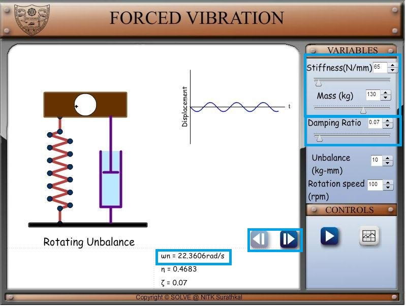
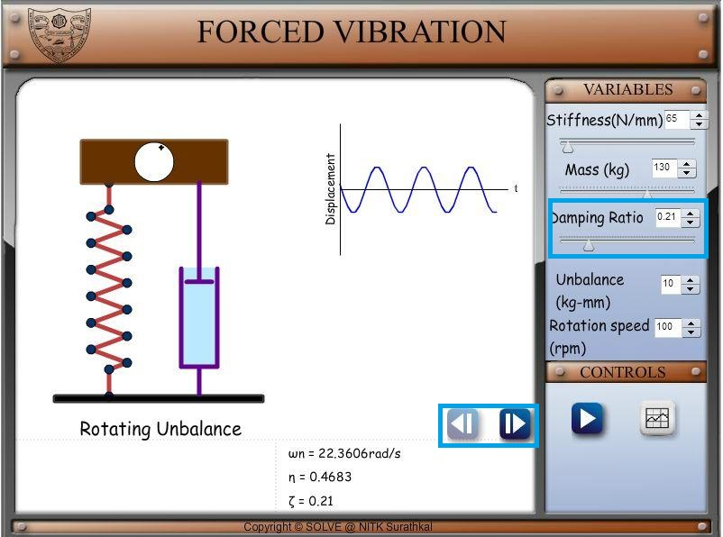
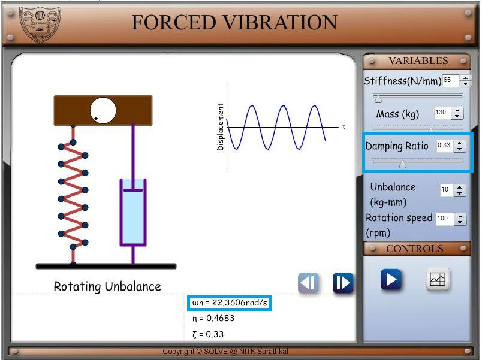
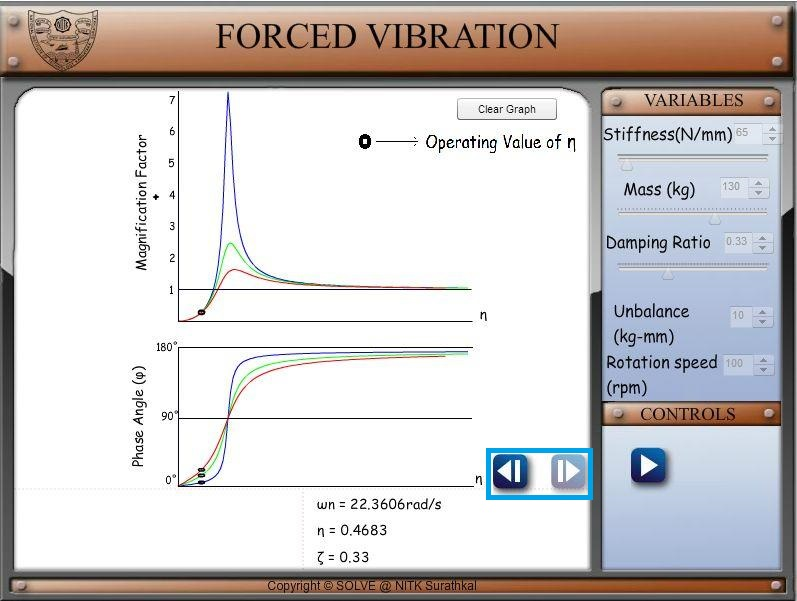

Rotating Unbalance is the uneven distribution of mass around an axis of rotation. Unbalance
is caused when the centre of mass (inertia axis) is out of alignment with the centre of rotation
(geometric axis). When an object is forced to spin about a fixed axis, if the mass is not evenly
distributed about that fixed axis then a centrifugal force resulted from this unbalance induce
an exciting force due to which the structure vibrates.
Unbalance in rotating machines is a common source of vibration excitation that one
sees in everyday life such as vibration of automobile engine or the washing machine. One
might have experienced the effect of vibration due to rotating unbalance while driven a car
where the wheels are not balanced. At some particular speed the car will shake, sometimes
quite violently. At this speed, the rotational speed of the wheels is such as to be close to the
natural frequency of the car on its suspension, so that the amplitude becomes a maximum.
This phenomena is really important because if not dealt with promptly one could have
catastrophic failures due to the fatigue caused by the vibration.
To study the effect of vibration due to rotating unbalance, an unbalanced rotating
machine modelled as single degree spring mass damper shown in figure having an equivalent
unbalance mass m rotating at frequency ω with its centre of gravity at a distance e from the
axis of rotation. This results a centrifugal force proportional to the square of frequency of
rotation. The centrifugal force is the maximum value of sinusoidal excitation in any direction.

The equation of motion in the vertical direction can be written as,
 ... (1)
Where M is the mass of the structure, c is the damping present in the system and k is the stiffness of the system.
Steady state amplitude X and phase angle due to vibration caused by rotating unbalance is given by,
... (1)
Where M is the mass of the structure, c is the damping present in the system and k is the stiffness of the system.
Steady state amplitude X and phase angle due to vibration caused by rotating unbalance is given by,
 ... (2)
And
... (2)
And
 ... (3)
Equation 2 and 3 written in dimensionless form as,
... (3)
Equation 2 and 3 written in dimensionless form as,
 ... (4)
... (4)
 ... (5)
... (5)

To observe the effect of damping in Forced Vibration of SDOF system using a Harmonic Force
PROCEDURE:
1. Set a value of Stiffness and Mass for the system. Set a small value of damping ratio (less than half of 0.707). Notice the natural frequency of the system shown below. Set a value of rotating speed in rpm which is not very close to natural frequency. You can also set a value for unbalance which is unbalance mass times eccentricity.

2. Click on the right arrow to load the graph of magnification factor and phase angle versus frequency ratio.
3. Click on the left arrow to come back to system display screen. Increase the value of damping and observe the change in Magnification factor as shown in below images.
  


- Study the variation of the following with change in frequency ratio for a SDOF under vibration due to rotating unbalance
- Amplitude ratio X/Xst
- Phase angle φ


-
Singiresu S. Rao (1990), Mechanical Vibrations, Addison-Wesley Longman Incorporated
Chandramouli Padmanabhan,Marie Dillon Dahleh,William T. Thomson (2008), Theory of Vibrations with Applications, Pearson Education
V. Ramamurthi (2012), Mechanical Vibration Practice and Noise Control, Narosa Publishing House
Haym Benaroya and Mark L. Nagurka (2010), Mechanical Vibration, CRC Press
C Sujatha (2010), Vibration and Acoustics, Mc Graw Hill Education
G K Grover (2009), Mechanical Vibrations, NEM Chand & Bros